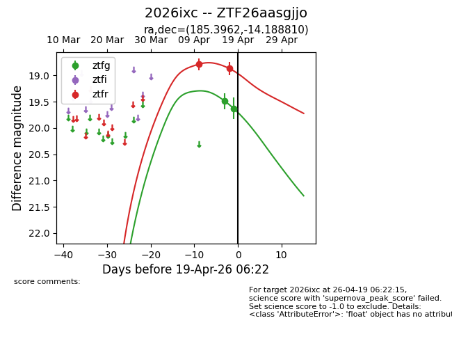
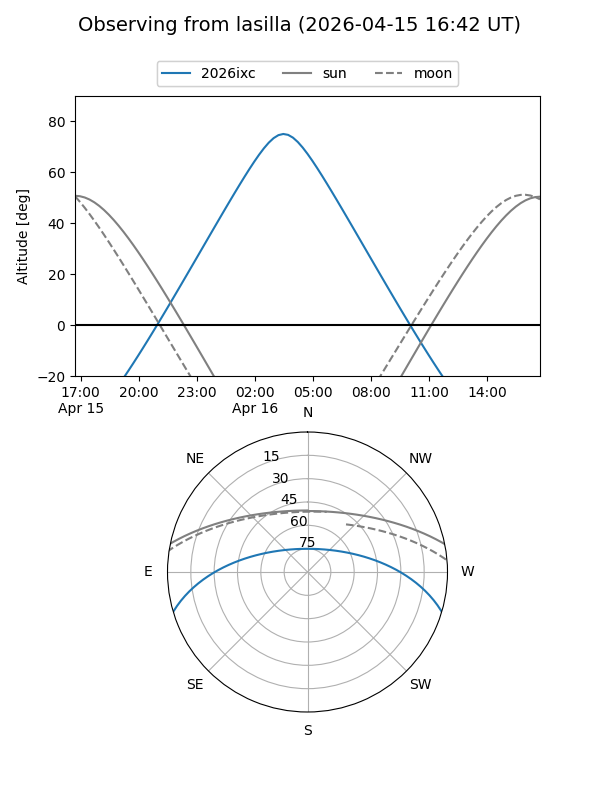
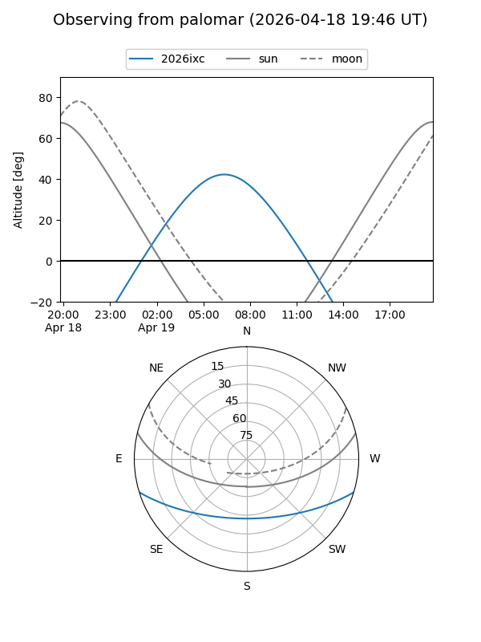
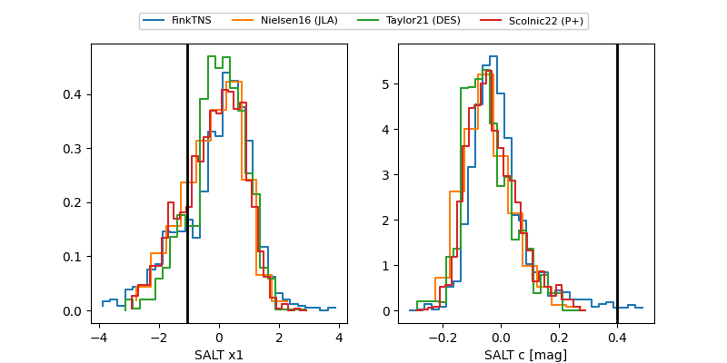

2026ixc
Target 2026ixc at 2026-04-19 06:27
Aliases and brokers:
FINK: link
Lasair: link
ALeRCE: link
TNS: link
YSE: link
alt names
ZTF26aasgjjo (ztf,fink_ztf)
2026ixc (tns,yse)
Coordinates:
equatorial (ra, dec) = 185.3962,-14.18881
equatorial (HMS+DMS) = 12:21:35.08,-14:11:19.72
galactic (l, b) = (292.0731,+48.05251)
Flags:
Photometry:
last ztfg=19.63, ztfr=18.87
2 ztfg, 2 ztfr detections
Lightcurve

Visibility


Additional plots
